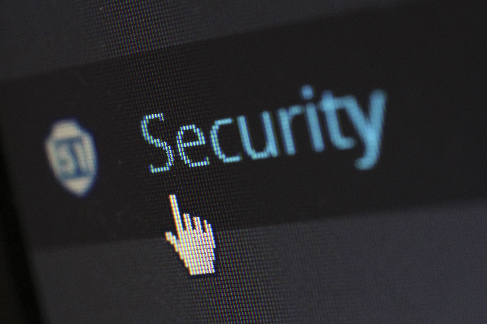

La importancia de la ciberseguridad
Publicado el 25 de octubre de 2026

¿Qué es la ciberseguridad?
La ciberseguridad es el conjunto de medidas y herramientas que permiten proteger dispositivos, sistemas y datos frente a amenazas digitales, como el robo de información, los virus informáticos y los accesos no autorizados.
Principales amenazas
Entre las amenazas más comunes se encuentran el phishing, que intenta engañar a las personas para obtener sus datos, los programas maliciosos y el robo de contraseñas.
¿Cómo podemos protegernos?
Es recomendable utilizar contraseñas largas y diferentes para cada cuenta, activar la autenticación en dos pasos, mantener actualizados los dispositivos y evitar abrir enlaces sospechosos.
La seguridad digital es una responsabilidad compartida. Adoptar buenos hábitos puede reducir considerablemente el riesgo de sufrir un ataque informático.
Volver al inicio